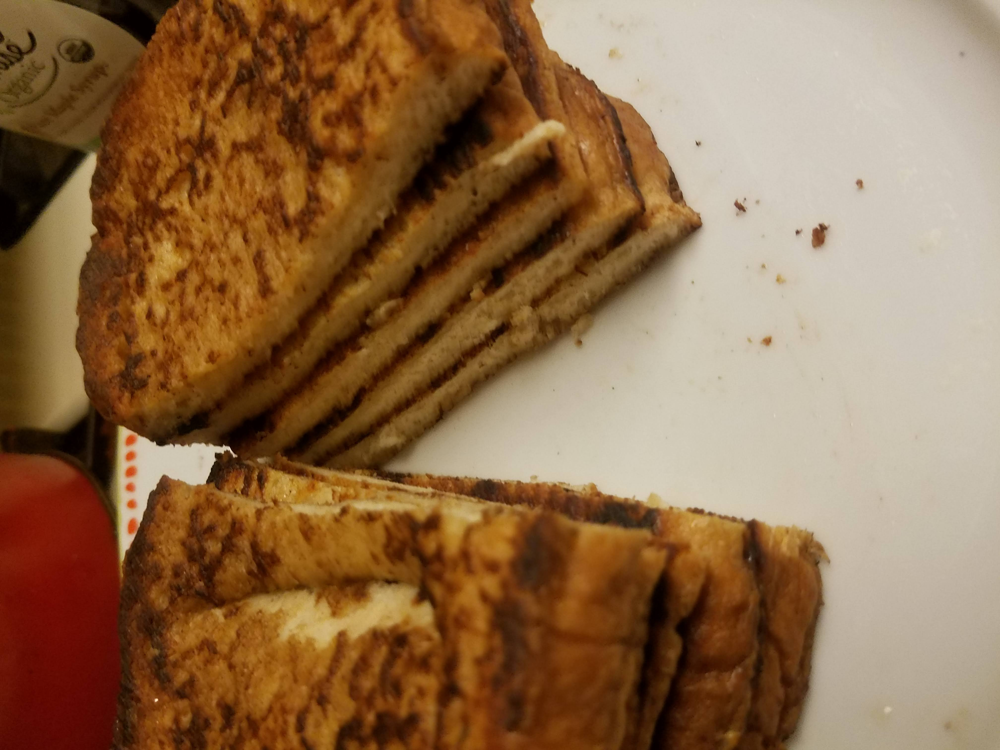

French Toast

Ingredients
- 5-6 slices sourdough: ideally set out to dry for a few hours
- 1.5 cup creamy oat milk: room temperature
- 2 eggs: room temperature
- ground cinnamon
- vanilla extract
- desired fruits
- half stick of preferred butter: room temp
- syrup or honey
- optional: oatmeal
- powdered sugar
- cinnamon sugar
Steps
- preheat skillet to medium
- for juicier fruit: wash & cut fruit then heat at 400-450 F in the oven while cooking french toast
- add vanilla to milk: to taste or color preference
- carefully whisk in one egg at a time into milk
- whisk thoroughly egg whites and yolk: looking for a smooth, thick, wet and creamy batter (small air bubbles are fine as long as your aren't heating the batter by over-whisking)
- sprinkle desired cinnamon onto batter - mix if you like or let it sit atop batter
- at the skillet: raise heat slightly and apply a chip of butter per piece of bread
- gently place bread onto batter, flip
- if needed: gently remove excess batter back to container
- for evenly cooked french toast: cook each side until brown - adding light butter when flipping to uncooked side
- optional: sprinkle a layer of oatmeal onto wet french toast and cook into bread for an extra crunch
- turn off skillet or pan
- save extra batter for no more than 24hrs
- add fruit - fresh or baked
- add maple syrup or honey to taste
- sprinkle cinnamon sugar and/or powdered sugar - serve and enjoy
M E N U